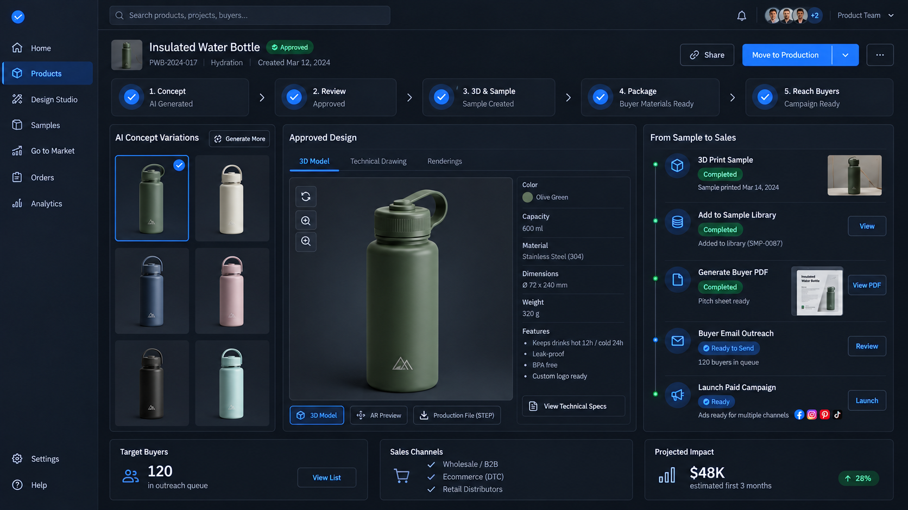
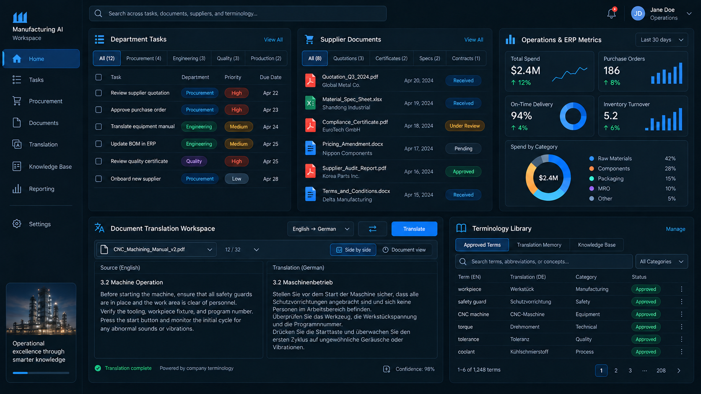
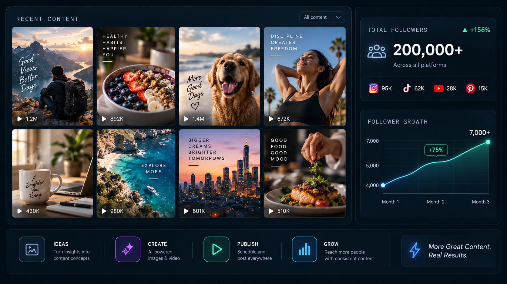
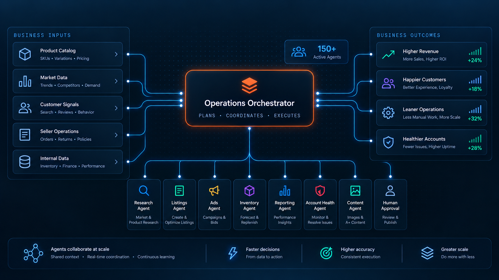
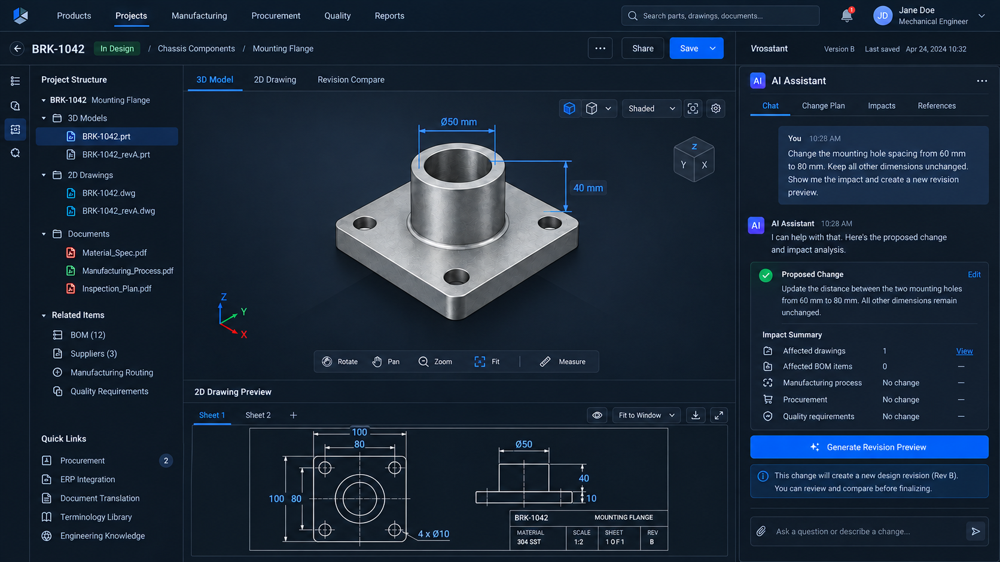
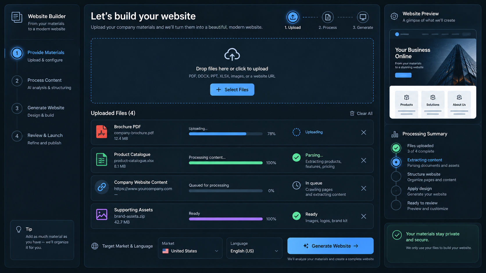
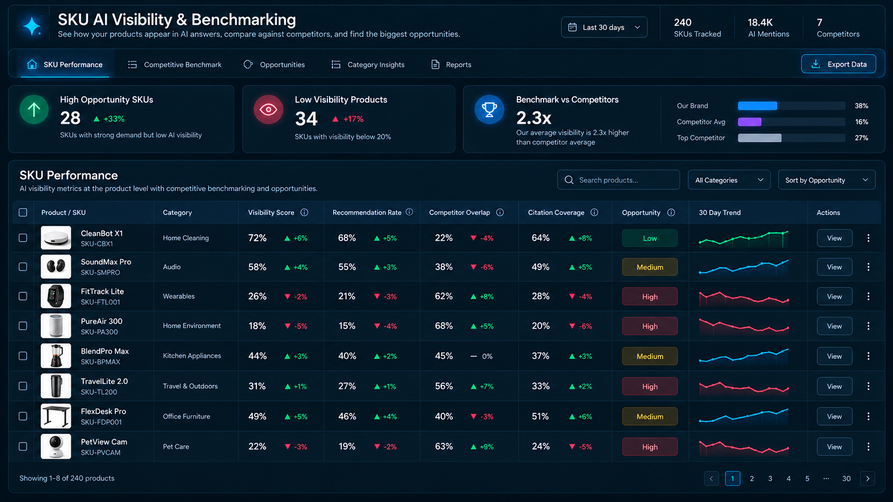
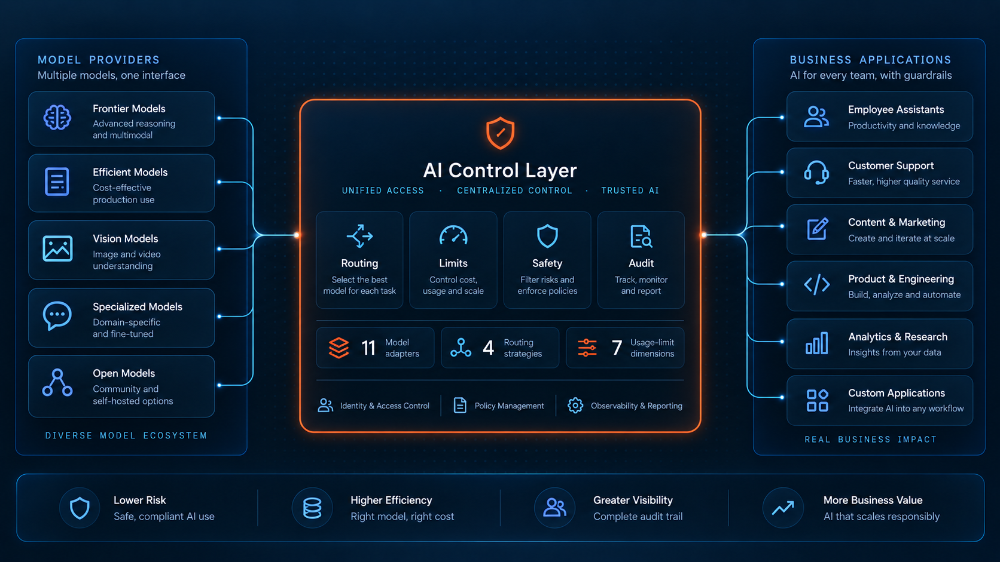
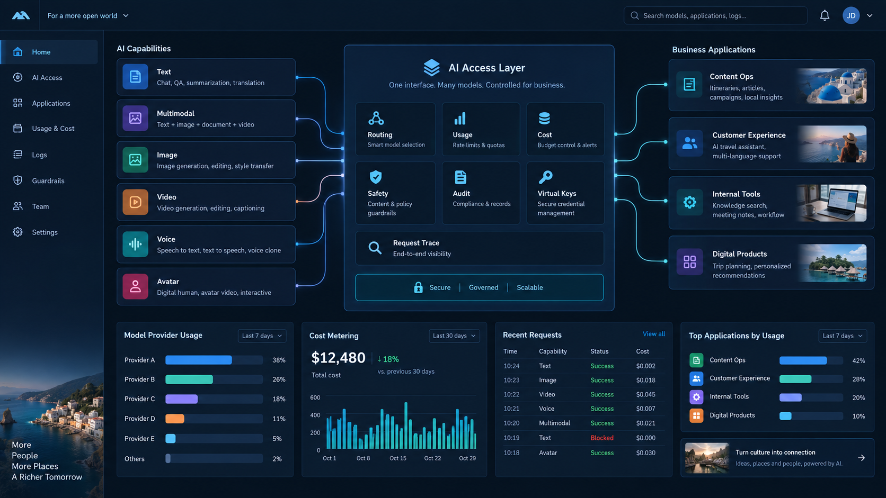

Turn ideas into
reviewable products.
AI-assisted concepts, 3D development, prototype and sample records, and buyer-ready product materials.
A software extension to manufacturing & trade
Custom AI software for the work around your products: design and sampling, factory operations, and product marketing.
Explore selected work ↗Wayfound is Able’s technology subsidiary. We extend Able’s sourcing, development and manufacturing expertise with custom software for product teams and commerce operations.

01 / Where software adds value
For product teams, factories, buyers and brands. Add the capability that fits your work, using the tools you already have.
AI-assisted concepts, 3D development, prototype and sample records, and buyer-ready product materials.
Supplier document intake, translation, data extraction, task coordination and reporting linked to your ERP or CRM.
Product and factory videos, reference-video shot breakdown, AI editing, multilingual versions and scheduled publishing.
02 / Selected work
Product, manufacturing and marketing use cases from our software work. Examples are ordered around product development, factory efficiency and sales operations. Illustrative KPI scenarios are labelled; they show how project results can be measured.
NEW / AI PRODUCT DEVELOPMENT
Illustrative KPI scenario
Connect concept variations, 3D / prototype records, sample approval and buyer-ready material in one workflow.
Start with a product reference or commercial brief. Explore concept variations, develop the selected direction in 3D and track prototypes and samples. Approved product records can feed a buyer PDF and outreach drafts. Material choices, engineering feasibility and production release stay with the product team.

AUTOMATION / FACTORY & TRADE
Illustrative KPI scenario
Link document intake, translation, structured records and scheduled reporting to the systems the team uses.
Bring multilingual files into a document workspace; draft translations with agreed terminology; extract fields for review; route updates to knowledge, ERP or reporting workflows. People confirm prices, specifications and purchasing decisions.

NEW / REMAKETHEVIDEO
Illustrative KPI scenario
Analyse a reference video’s shot structure, adapt your own footage, create AI-assisted edits and prepare multilingual versions for scheduled distribution.
Reference → shot breakdown → your footage + AI-generated material → edit and multilingual subtitles → review → scheduled publishing. Reuse pacing, transitions and subtitle structure across different products. Self-service and custom editing are available; supported accounts and distribution platforms are confirmed per project. Views, enquiries and sales depend on the content and campaign.

ECOMMERCE / MULTI-AGENT OPERATIONS
Provided business scale · turnover is business context; incremental revenue from AI is not measured here.
Coordinate research, listing drafts, operational checks and reporting, with publishing and budget controls.
A multi-agent architecture connects product research, listings, advertising, inventory, content and account checks. The operating scale above was supplied by Able for this case. The diagram’s growth percentages remain illustrative.

ENGINEERING / AI WORKSTATION
Illustrative KPI scenario
Explore an engineering assistant for change proposals, impact checks and version review alongside CAD and project files.
A manufacturing software use case: read a change request, prepare a revision proposal, identify affected drawings and linked records, and give engineers a version comparison. CAD and production-system integrations are scoped to each project. A qualified engineer approves the final design.

EXPORT / WEBSITE DEVELOPMENT
Workflow deliverables
Structure company and product materials into reviewed web pages and hand over editable source code.
Organise the supplied material, define page structure, review translations, build the website and prepare a source-code handoff. Hosting, integrations and ongoing updates are agreed as part of the project.

PRODUCT INTELLIGENCE / AI VISIBILITY
Illustrative KPI scenario
Bring SKU-level AI visibility, citations and competitor comparisons into a prioritised action list.
This is a visibility and benchmarking use case. It helps identify questions and content gaps to investigate; it does not validate demand or guarantee a bestselling product.

CUSTOM DEVELOPMENT / ENTERPRISE AI
Architecture illustration
Design shared routing, permissions, usage limits and audit records for business applications.
A reference architecture for employee assistants, support, content, engineering and internal tools. Model choice, deployment, routing, budgets and audit requirements are scoped around the organisation.

OTHER INDUSTRIES / AIGC PLATFORM
Architecture scope
Connect model access, cost visibility and application workflows through one controlled layer.
A wider software-development example beyond physical commerce. Content operations, customer assistance and internal applications can share routing, metering and policy controls. The supplied visual is a platform illustration, not proof of a completed tender or production deployment.
03 / How we work together
Agree the inputs, the deliverable and the decisions people need to keep before building.
Show us a repeated task, product brief or marketing process and the tools involved.
Current workflow & prioritiesAgree the output, integrations, access and review points.
Scope & success measureConnect the smallest useful system to real materials and controlled data.
A working pilotTest with your team, measure the result and decide what to add.
Reviewed results & next stepshours / month of current work. Estimate from your inputs; achievable savings are assessed separately.
Practical questions
Yes. We scope connections around your ERP, CRM, CAD, storage or commerce tools. A first project can start with restricted or read-only access.
Your team approves designs, engineering changes, pricing, production release and campaign budgets. Video production and distribution can be automated after agreed review and account authorisation.
We agree data sources, permissions, service providers, retention, logging and deployment boundaries before implementation. Exceptions are routed to the responsible person.
Software can be discussed alongside a product project or as a separate workflow engagement. Tell us the system and output you need so we can assess the fit.
RemakeTheVideo analyses shot timing, transitions, camera movement and subtitle structure, then uses your own product or factory materials for a new video. Review the shot plan, edited versions and target publishing accounts before distribution.
Start your workflow
A product idea, a repeated task or a marketing bottleneck is a good place to start. Share the essentials and the result you want.
Your current workflow
The first useful deliverable
Tools, access & review points